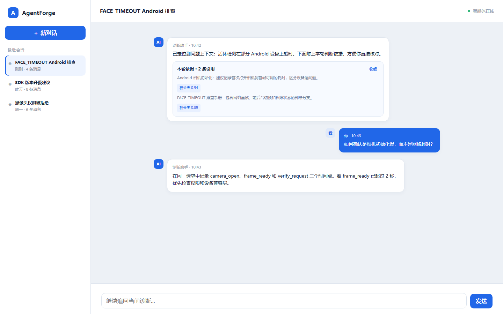
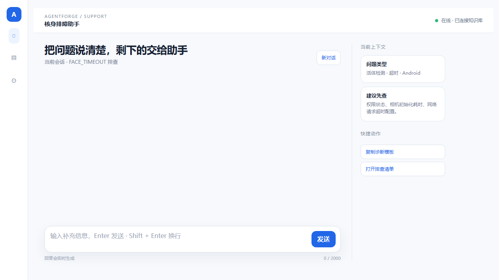
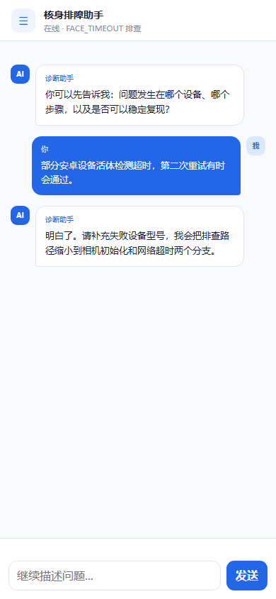

AgentForge / Evidence Desk
面向企业故障排查的 AI 诊断工作台
围绕问题诊断、知识证据和流程配置构建可运行的工作台。README 先让读者看见产品，再说明如何启动、验证和继续深入。
预览



核心能力
诊断对话
流式展示排查过程、知识引用和诊断结果，支持补充信息、工具调用与人工审批。
知识与质量
管理文档和分块，使用向量与关键词混合检索，并用命中测试与回归检查质量。
Agent 流程
统一管理路由流程与诊断流程，支持草稿、发布、激活、试运行和运行记录。
运行结构
工作台
apps/customer-service 负责诊断对话与证据展示；apps/data-admin 负责知识库、反馈和流程管理。
packages/sdk、packages/shared-types、packages/ui 与 packages/cui 提供共享能力。
apps/ customer-service/ # 诊断前端 data-admin/ # 管理端 server-py/ # API / Runtime / worker packages/ sdk/ shared-types/ ui/ cui/
快速开始
01安装 Node.js 20+、pnpm 9+、Python 3.12+、uv 与 Docker Desktop。
02执行
pnpm install，进入 apps/server-py 执行 uv sync --locked。03复制
.env.example，配置 LLM API Key 与本地 PostgreSQL。04执行
pnpm infra:up、pnpm db:migrate、pnpm db:check。pnpm dev # 诊断前端 http://localhost:5173 # 管理端 http://localhost:5200 # API http://localhost:8000/docs
当前项目处于实验阶段，接口、数据模型和运行方式可能变化；仓库不附带真实业务数据或生产性能指标。
深入文档
docs/operations/development.md · apps/server-py/README.md · docs/architecture/routing.md · docs/operations/deployment.md